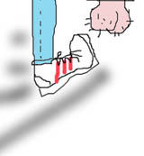

 KANJIDAMAGE is the kanji book I wanted to have when I first started studying! This book is for people with a basic knowledge of ひらがな and カタカナ, people who aren't in a class and want to learn on their own, and busy people who don't have time to learn all the formal words or business words. In other words, this book is for average people who maybe have a job or a bunch of college, and can only study an hour a day. I'm one of those people! Finally, it's for people who are fed up with other methods, who are desperate enough to try anything.
I try to address all the beginner questions, like, "How do I remember how it's pronounced?" "Why does it look that way?" "How is it different from that other guy over there?"and of course,"Do I really need this one?" My method puts its greasy arm around your shoulders and says, "Look, kid, not only am I going to answer that question, but I'm going to explain what the underlying rule is, so you can avoid similar problems in the future." It takes the chaos of kanji and makes a rational system out of it. It gives tips to speed up your study and help you avoid common mistakes. And of course KANJIDAMAGE accomplishes this via plenty of yo mama jokes.
It's like this: Japanese IS pretty hard, but half the problems are the way it is taught. You'd think that foreigners would teach it better, because native speakers are generally oblivious to the inconsistencies of their own language. But no! Foreign textbooks are just as bad. Hey, Blue-eyes: you can't teach Japanese like you'd teach German. You can't teach kanji without radicals. You can't teach synonyms by giving them all the same English definition. You can't teach verbs without including the damn prepositions!
Next time you, the reader, are going batshit about how arbitrary or complex Japanese is, take time and think that maybe the textbook is making it complex.
So far, all kanji books have been written by people that are language experts and professors. It turns out that professors are the people least-qualified to teach kanji (well, second only to Japanese people).
Here's why: By the time some dude gets a PhD. In Japanese, he has totally forgotten the basic problems that drive students crazy. He's all into the 2,000 year old etymological roots of "cow" (牛) instead of remembering that 'cow' looks exactly like 'noon' (午) and what a pain that is. He's forgotten that if you're just now learning "car" (車) and "big" (大）, you can't necessarily see their relationship to collision (衝) and nature (然) (hint: both 車 and 大 are hidden in the middle of the bigger kanji). He's forgotten that students waste a lot of time learning pronunciations for kanji that are never, in practice, used. That is why I am the ideal person to write kanji books — I still suck!!! Although I have the experience to be a teacher, I am still learning and making mistakes just like you guys, so I can tell you, "Don't do this dumbass thing that I did!"
1: When I got my first stack of kanji cards I was like, "WTF??? C'mon guys." See, I thought it would just have the kanji on the front and the meaning on the back, but instead there was like this deluge of data: Kanji number, dictionary number, meaning, onyomi, examples, radicals, stroke order, even something called the "Sunshine computer dictionary graphemes"... WITH NO EXPLANATION OF WHY IT WOULD HELP ME TO LEARN ANY OF IT. Rather than solving the mysteries of kanji, all this extra no-context information only added to the confusion.
2: Most flashcards/iphone apps are small, so they give a one-word definition of a kanji, but no context. For instance, the card for 亡 will say it's pronounced な＊い, and it means, 'to go away'...but it won't tell you that ない is never used by itself!(in fact, it's only EVER used as part of the phrase 亡くなる). And the flashcard/app will also neglect to tell you that 亡くなる doesn't mean to literally go away, it is used figuratively, to mean 'pass away, die'... Then, the card/app finishes up by not telling you that '亡くなる' is usually written in hiragana anyway, so who cares. So, through no fault of your own, you just learned three wrong things. The result is that you'll write an email to your Japanese pen-pal saying, "私のボールペンが亡い" and your pen-pal will be like, 'Why did his ballpoint pen die?'
3: Dictionaries, on the other hand, give you TOO MUCH information: look up 'receipt' and you'll see: uketori (受け取り)、ryoushuu (領収)、ryoushuushou (領収証)、juryousho (受領書)、AND Juryoushou (受領証). But which word do Japanese people actually use when they go to the store? None! They say レシート (RESHIITO)!! But you won't learn that in the damn dictionary!!!!
Also, dictionaries print totally obscure words, wild exceptions, and totally rare nuances, right next to everyday words. Just look at a plain ole' English-English dictionary if you don't believe me.
Bottom line: Sometimes it's not enough to just say 'Here is the English word which is the equivalent of the Japanese word.' Because the nearest English word overlaps with 3 Japanese words, and fits well with none! At times like that, you gotta explain the specific real-life situations when Japanese people only use word A and never use word B.
For instance, my dictionary says that both 記憶 and 思い出 mean 'memory.' But, 記憶 means one's capacity to remember, as in, "As I get older I'm losing my memory." And 思い出 refers to a specific memory, such as seeing your dad get out of the hot tub. My dictionary also says 世の中 and 地球 both mean 'the world' – except 世の中 means "the social world" as in, "Fuck the world!" or, "I'm mad at the world!" while 地球 means the literal globe. In these instances, it turns out that the Japanese 'synonyms' aren't even close to the same meaning – It is the ENGLISH WORD that has too broad of a meaning!
4: A lot of kanji textbooks teach kanji grouped according to subject. For example, the book they made us use in school put 寒い (samui = cold) , 暖かい (atatakai = warm) , 涼しい (suzushii = cool) , and 熱い (atsui = hot) together, because they all have to do with temperature. That approach makes sense if you're teaching German or Swahili or Thai, but for kanji? HELLS NAW!
Here's the problem: even though their meaning is very basic, those five kanji are all really complex to read or write, and they have almost no radicals (component parts) in common – which means that if you learn the first kanji (寒い) you have exactly zero information about how to draw the next one (暖かい). Retarded! To make matters even worse, if you're a drunk like me, you'll forget the radicals of 寒 and 暖 before you ever encounter another kanji which uses those radicals! So then you have to painstakingly re-learn the same radical, time and again.
So again, it's not a "Nihongo is fucked" problem, it's a "how people teach Nihongo is fucked" problem.
Now, compare that to my book, which teaches all the 隹 kanji together: 稚, 推, 唯, 維, and 催. And here is what is really rad: by the time you get to 隹, you will already have learned all the left-side radicals like 糸、禾, ,#{image_tag "radREALLYsmall/man.jpg"} and 口！. So instead of learning the kanji from scratch, you'll be merely re-arranging parts that you already know, to make new kanji.
,#{image_tag "radREALLYsmall/man.jpg"} and 口！. So instead of learning the kanji from scratch, you'll be merely re-arranging parts that you already know, to make new kanji.
Which is only one of the many things I do that most books don't. Which brings us to
The genesis of this method was conversations that I had with two scientific guys (basically mathematicians applying their knowledge to linguistics). Neither man had ever met the other, nor read the other's work, but they both said the same thing: the most logical, efficient way to study was going from simple-to-complex forms.
They said, "Start with a set of the most basic kanji. Then try to combine every kanji in that set with every other kanji in the set – and lo! You will be able to construct several new kanji just by re-arranging the kanji you already know. No learning big, complex kanji from scratch. After you've learned all those kanji – ONLY THEN do I teach you a new radical. Then the process repeats: I combine that new radical with all the kanji you already learned, and see how many NEW kanji result - and then repeat, and repeat, and then pretty soon you're reading whatever bullshit manga you're into!
The system makes learning easier, because once you've learned around 200 kanji, you can learn 12 NEW kanji just by learning ONE SINGLE 3-stroke radical and combining it with the first 200! Just like English: imagine if you learned 10 letters, and then someone taught you one new letter. . . imagine how many new words you'd have access to.
Anyway, both mathematicians had the same idea, and both wondered why there was no book or flashcard on the market that used it. So I sat down and busted that shit out.
Remember mnemonics from school? "Every Good Boy Gets Fudge," or "My Dear Aunt Sally," or even that notorious pedophile, one Mr. "Roy G. Biv"?
Well, I wrote a mnemonic sentence for each kanji. And that mnemonic ties together all the radicals in the kanji, the pronunciation, and also the meaning of the kanji.
Not only that, but each radical and each pronunciation corresponds to a specific English keyword, so every time you see a kanji, radical, or a Japanese pronunciation, it will always use the same one keyword. Hella rational!
There's a lot of problems with kanji that don't occur when you're studying Chinese (or German or English, for that matter!) Further fucking you is the fact that normal textbooks or apps don't even acknowledge these problems exist! It's hard to fight back against a problem that has no name – you think you're the only one who has trouble with it. I developed a sort of "checklist of common problems," and systematically tagged all the kanji that had those problems.
For instance: Are there 2 kanji with the same meaning? Is this one useful or not? Is is usually written in hiragana? How to I remember if the vowel sound is a long-vowel or short-vowel? Do I often get it mixed up with a similar-looking kanji? Is this a word I can say in casual conversation, or is it only a newspaper word? Does the kanji go with a weird preposition? If there are two synonyms, which one is useful? Is the kanji only used in combination with one specific other kanji? Can you guess the pronunciation from the radicals? Does it have 2 unrelated meanings? And so on.
That's right – I cheated. I took the two most common sets of kanji used by students: the JLPT kanji, levels 1-4 (which are used in the Japanese Proficiency Test), and the JOYO kanji (which are the 2,000-ish kanji that Japanese students have to memorize in high school). I combined those two sets, and then I threw out all the bullshit ones where the meaning sounds like a crossword puzzle clue ('deep sea life form' or '17th century sulphur refining component'). See, by the time I started writing this book, I'd been living in Japan for about 5 years, so I had a pretty good idea of what was useful and what wasn't. I looked back at all the stuff I studied over the past 5 years that was not helpful to me, and got rid of it, so you don't have to waste YOUR time. Finally, I teach the most-common prepositions and particles together with the verbs – something no other book does. In other words, it's not a complete dictionary. It's a book of the MOST COMMONNLY USED forms of words.
And if I saw a radical that didn't 'officially' exist according to the 'normal' textbooks, I arbitrairly gave it a name and threw that shit in the mix. Better to learn it once than 20 different times, and fuck the rules!
Don't be fooled by my hype, though: even with my awesome system of jaw-dropping logic, kanji is still a motherfucker. You'll study 12 months and still not be able to read a newspaper. You'll contend with maddening exceptions, inconsistencies, kanji that mean one thing by themselves, another thing when paired with a second kanji, and nothing at all when converted into a radical. You'll encounter pernicious kanji that mutate and change shape; that look nothing like what they mean, and of course over 100 kanji with the same exact pronunciation!! (コウ, to be precise). And on top of all that, should you complain, you'll have to deal with your Japanese friends who are quick to remind you that English is even worse!
(the Yo Mama jokes are also integral to the system, but they're not really a strategy. They're more like philosophy).
Anyway, hopefully this intro has convinced you to try the KANJIDAMAGE method.
The method is split into three parts:
 KANJIDAMAGE
KANJIDAMAGE